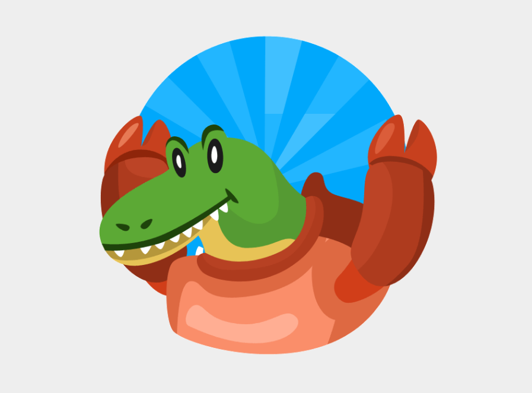
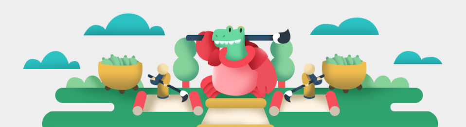

Wanikani !
Il va falloir se mettre sérieusement à apprendre les kanji. J’ai déjà parlé de chaînes Youtube et de livres pour nous aider. Aujourd’hui, je vais parler d’un site bien pratique !
Wanikani, c’est un mélange de crocodile (ワニ wani) et de crabe (蟹 kani) qui veille au grain sur notre apprentissage du japonais !
Sur le site, on peut créer un compte pour accéder à des leçons sur les clés des kanji (les éléments de base qui apparaissent dans la formation de plusieurs kanji), mais aussi sur les kanji en eux-mêmes et sur des mots de vocabulaires (avec, parfois, plusieurs kanji associés). Ensuite, il faut vérifier si on a bien retenu les leçons grâce aux review, qui proposent les kanji ou clés vus, pour lesquels il faut redonner la prononciation, ainsi que la traduction. Attention, le site est tout en anglais ! Cela permet aussi de faire des révision d’anglais comme ça !
Crabigator, la gentille mascotte, nous apprend aussi les différentes lectures des kanji : on yomi et kun yomi (Cf. article sur l’écriture japonaise).
Les apprentissages sont répartis sur différents niveaux, dont les 3 premiers sont gratuitement accessibles. J’en suis toujours au troisième, je stagne et je fais même parfois des résultats médiocres ! J’ai plusieurs dizaines de leçons en attente, mais j’aimerais obtenir un sans faute avant de continuer :D
Il existe différentes rubriques sur le site où l’on peut aussi apprendre les kana, si tu as besoin de quelques révisions !
